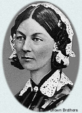
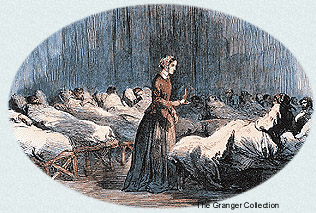

|
 Miss Florence Nightingale earned the affection of the British people for her competent, compassionate nursing of sick and wounded soldiers during the Crimean War. Her admirers contributed an extraordinary sum to a fund for her to demonstrate their appreciation.Since returning home as a national heroine, Miss Nightingale has crusaded tirelessly to improve living conditions for Her Majesty's troops wherever they are stationed throughout the British Empire. She also has labored to establish programs of formal education in nursing and midwifery for women. Miss Nightingale has carried on her work despite being an invalid confined to her home since 1857. American Magazine recently corresponded with Miss Nightingale. We share some highlights from our correspondence.
Q. How did it come about that you went to nurse British soldiers in the Crimean War? Miss Nightingale: When I was 16, I heard the voice of God calling me to His service. I sought to answer by working as a nurse, despite my family's strong opposition. I received some formal instruction in nursing in Germany and also read much on my own about public health and hospitals. Shortly after the Crimean War began in March of 1854, newspaper reports about how horribly unprepared the British Army was to care for the sick and wounded enraged the public. Secretary of War Sidney Herbert called on me to establish a corps of female nurses to deal with the crisis. Q. How were you received by the doctors at the military hospital where you were sent to help the wounded soldiers? Miss Nightingale: At first, they resented me and my nurses, particularly because we were women treading on what until then had been a man's domain. They would not allow us to tend to the patients. However, a few days after our arrival the hospital began receiving thousands of wounded, and the overwhelmed doctors turned to us for help. Q. In what condition did you find the military hospitals?
 Miss
Nightingale: I found appalling and inexcusable filth, desperate
want, suffering, and death all around. There was not enough food for the
men, and what they did receive was barely edible. The privies were clogged
so that the men, suffering from dysentery and cholera, had to relieve
themselves in open pots right in the wards. After the thousands of battlefield
casualties began to arrive, conditions became even worse. The building
was made of rotten wood infested with vermin. The soldiers' clothing was
filthy and ridden with lice, few even had blankets, and their wounds were
infested with maggots. Men were dying like flies, not from the wounds
or illnesses for which they had originally come to the hospital, but from
sicknesses they contracted after they arrived there.
Q. What did you do to remedy these dreadful conditions? Miss Nightingale: Before we were allowed to care for patients directly, we worked in the kitchen, preparing decent food for them. When we were at last admitted to the wards, we cleaned them and arranged for the wounded men's clothing to be washed. I took over supplying the entire hospital, using money at my disposal-much of it contributed by the public-to buy everything from soap to operating tables, all of which had been lacking. And we nursed the sick, injured, and dying men. Q. Why are you known as the "The Lady with the Lamp"? Miss Nightingale: Every night, I would walk through the severely overcrowded hospital wards, lighting my way along seemingly endless corridors packed with thousands of sick and wounded soldiers. I would stop to offer words of comfort to as many of the men as I could. And so they came to call me "The Lady with the Lamp." Q. With the Crimean War over, what work have you been involved with? Miss Nightingale: I have dedicated myself to bringing to light the shameful conditions in which British soldiers live and to seeing that they are reformed. Her Majesty Queen Victoria has most graciously met with me twice to discuss what might be done. She has appointed two royal commissions to investigate and correct the situation. Q. What do you plan to do with the $222,000 in the Nightingale Fund given to you by your grateful admirers? Miss Nightingale: I will use the money to establish the Nightingale Training School for Nurses at St. Thomas's Hospital in London. There, qualified women will receive a thorough education, including medical instruction from physicians. They will be prepared to be nurses of a caliber the world has never before seen. |
|